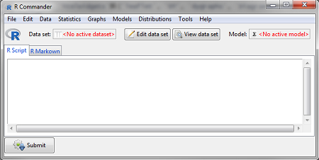

2017-10-15 19:58:13
目录
为什么学R？
R是什么？
一种
历史
- 前身是S (John Chambers, et al. Bell Lab, 1976) –> S-Plus
- 由Ross Ihaka & Robert Gentleman开发(U Aucland, 1990s)
- R Core Team成立，维护R核心代码(1997)
现状
- 生态系统：核心组、开发者、用户
- 统计学家事实上的标准工具语言
- 渐受产业界重视
- 金融、零售、生物制药、气象地质、信息科技, …
- 整合大数据技术(
Spark, …) - 商业化分支：Revolution R Analytics, Oracle R Enterprise, …
R有何用？
数据科学
- 数据抽取
- 文本/网页
- 第三方数据文件
- 关系型/非关系型数据库
- 数据清理
- 缺失/奇异值
- 变形/标签
- 数据分析
- 描述分析
- 统计推断
- 挖掘预测
- 可视化
- 制图
- 数据产品(本deck即knit而成)
工程开发
- R附加包
- Shell/bat调用
- 与SQL/Java/Python联用
- 与Spark/Hive/Pig联用
R的优缺点
优点
- 开源
- 免费、自由、透明
- 活跃的支持社区
- 为统计而生
- 强大而前沿的统计分析功能
- 强大的作图能力
- 为懒人而生
- 背靠附加包，代码产出率高
- 胶水语言，便于混搭其他工具
缺点
- 学习曲线陡峭
- 语法略奇葩
- 支持文档不详尽
- 速度/效率/内存管理弱
- 数据全部读入内存
- 解释执行，速度较慢
- 缺少权限/安全控制
- 限制其工程开发用途
R适合谁学？
这些人适合学R
- 日常业务需求
- 常用小型数据集运行分析、挖掘
- 常执行重复分析、报告过程
- 用不起昂贵的分析工具，但也想跑点分析
- 个人禀赋
- 有志成为数据科学家
- 对数据/算法/结构有兴趣
- 有一点黑客精神
你可能关心的问题
Q: 需要编程经验吗？ A: 不需要有编程背景。最好懂SQL，懂Python更好。 Q: 学起来真的难吗？ A: 入门容易精通难。 Q: 一般多久能上手？ A: 一般50-100小时实操可大致上手。 Q: 学会了能涨工资吗？ A: 不能。
Fig. Analytics tools used by respondents to the 2015 Rexer Analytics Survey (multiple choice). - r4stats
Fig. Lavastorm survey of analytics tools. - r4stats
怎么学R？
30%的时间 - 书本和课堂
书本(供参考)
- 入门
- R语言初学者指南 (Alain F.Zuur)
- R语言实战 (Robert I.Kabacoff)
- 高手
- ggplot2:数据分析与图形艺术 (H. Wickham)
- 数据科学中的R语言 (李舰, 肖凯)
- 老司机
- R语言编程艺术 (Norman Matloff)
- 高级R语言编程指南 (H. Wickham)
- Software for data analysis programming with R (J. Chambers)
在线课堂
- Massive Open Online Courses
- 支持网站
70%的时间 - 社区和实战
社区
- 帮助
- 资源
- 竞赛
实战
- R帮助系统:
help(),? - 坚持在实际工作中使用
- 分解一个实际问题，将其中的分析、展示部分用R实现
- 封装可复用代码，提升效率
- 参加项目协作，提升实践能力
- 团队协作流程和框架
- 团队R代码规范、管理指南
- 协作开发，解决中大型分析问题
- 多工具生态环境
帮助系统
?ggplot2::aes或手动导航

随机手册(Vignette)
- Vignette [vi:n'jet]: 画像。附加包的随机手册。
browseVignettes("ggplot2")

R单机作业环境的搭建
下载并安装R
- 访问R官网，下载R for windows并解压到C盘，建议安装64-bit版本（前提是安装了64位操作系统 ）
- 更推荐用Linux
集成开发环境(IDE)
- IDE不是必需的, 你可以用R自带的GUI界面写交互命令行
- 但R本质上是一种脚本语言，存为脚本后运行才是王道
- IDE的选择:
- 强烈推荐使用RStudio Desktop (后续课程都将在RStudio上演示)
- 接下来Rstudio将是你的一个R的宝库
- 在Linux上，更建议安装Rstudio Server
- 可以用你所惯用的代码编辑器，如Vim, Emacs, Notepad++
- 但不要用Win Notepad、WordPad、MS Word等带BOM的编辑器
- 还可以通过插件方式整合在其他IDE中使用，如Eclipse + StatET, Jupyter Notebook + IRkernel, R Tools for Visual Studio
- 如果要对R进行工程开发，建议采用这种方式
- 强烈推荐使用RStudio Desktop (后续课程都将在RStudio上演示)

RStudio 1.0 GUI
一些初始配置 (RStudio)
全局设置
(Tools -> Global Options)
- Code Tab
- Editing -> General -> Insert spaces for tab | Tab width: 4
- Display -> Show margin | Margin column: 80
- 其他Tab
- 修改Work Directory
- 修改CRAN Mirror
- 修改外观主题
环境配置
(Control PanelControl Panel Items-> Change settings -> Advanced -> Environment variables)
- 验证R安装目录是否在PATH中 (
Sys.getenv('PATH')) - Edit PATH， 将R安装路径添加进去
基础组件
- RTools (对于Windows): 包含
gcc,mingw等编译工具 - MikTex on Windows / Texmaker on Linux: 用于生成pdf文档
安装附加包 (add-on package)
附加包: R最重要的优势
用法
- Packages面板 -> Install -> 输入包名
install.packages(c("<包名1>", "<包名2>", ...))
使用原则
- 优先使用官方包、流行包
- 避免使用偏门包、来历不明的包
- 使用前阅读手册，了解其原理和局限
推荐一些常用包
- 数据抽取
- 数据库:
RODBC,RMySQL,RPostgresSQL - 表格数据:
readr,XLConnect,readxl - 网页:
XML,httr,jsonlite,RCurl
- 数据库:
- 数据整理
- 拆合排转:
dplyr,tidyr,reshape2 - 文本/时间:
stringr,lubridate,timeDate
- 拆合排转:
- 数据分析
- 建模:
car,lme4,glmnet,survival - 金融/时序:
quantmod,xts,zoo - 地理:
sp,maps,maptools,ggmap
- 建模:
- 数据挖掘
- 机器学习:
caret,e1071,kernlab - 自然语言:
NLP,tm,RTextTools
- 机器学习:
- 可视化
- 图表:
ggplot2,rCharts,ggvis,htmlwidgets族(leaflet,DT,dygraphs,DiagrammR,d3heatmap, …),plotly,rgl,rbokeh,highcharter - 报告:
rmarkdown,knitr,shiny,ReporteRs
- 图表:
- 工具
- 运行效率:
data.table,Rcpp,parallel - 开发:
devtools,roxygen2,testthat
- 运行效率:
典型应用套路
GUI操作
通过Rcmdr或rattle包调用tcltk库，驱动图形界面，进行整理、分析、挖掘
R Commander (经典分析利器)
library(Rcmdr) ## 加载Rcmdr包 Commander() ## Rcmdr主函数
rattle (整合数据挖掘功能)
library(rattle) ## 加载rattle包 rattle() ## rattle主函数

交互命令行
用法
- 最传统的使用形式
- 在控制台敲入命令后回车，即时返回结果
- 通过History面板或向上键调出历史命令
| 优点 | 缺点 | |
|---|---|---|
| 1 | 直观 | 结果杂乱 |
| 2 | 便捷 | 无法复用 |
例子
1:4 + 1:4
## [1] 2 4 6 8
library(plotly) plot_ly(cars, x=~speed, y=~dist) %>% add_markers()
scatter cars
脚本
用法
- 创建.R脚本文件，编辑函数、执行代码
source该.R脚本读入，编辑或块选执行- 用Shell/bat等外部工具直接通过
R CMD或Rscript命令调用脚本 - 选块Ctrl+Enter，显示为R Notebook
| 优点 | 缺点 | |
|---|---|---|
| 1 | 可复用 | 需脚本管理 |
| 2 | 代码逻辑 | 结果欠结构 |
例子
保存一个intro.R脚本
# Open pdf device and name it
pdf('intro.pdf')
# Lazy plot a scatterplot
plot(cars, main='Scatterplot of cars')
# Close all the devices
dev.off()
执行intro.bat，内容为
@echo off : If Rscript is not in PATH, define the location manually Rscript.exe intro.R @pause
最后在脚本同目录下生成一个intro.pdf。全过程不出现RGui。
可重复报告
用法
- 创建.rmd文档
- 用YAML头部定义文档参数
- 可自由生成html, docx, rtf, pdf
- 混编可执行代码(R/Python/SQL)和自然语言行文 (markdown/ html/ LaTeX)
| 优点 | 缺点 | |
|---|---|---|
| 1 | 可反复运行 | 有一定学习成本 |
| 2 | 文学化编程 | 需要一定的构思 |
例子
- 创建的.Rmd文档本身自带示例代码，可尝试Knit
- 本文档是一个较复杂的例子
- 可以将配置项目写在_output.yml文件中，
rmarkdown::render()生成文档 - 可以尝试套用模板创建一个封装好格式的R Markdown文档
- 默认的html
- R Presentation
- (安装
rticles包)基于template的文档
- 直接创建R Notebook文档
入门仪式: Hello, world!
Java
public class HelloWorld
{
public static void main(String[] args)
{
System.out.println("Hello, world!");
}
}
PHP
<!DOCTYPE html>
<body>
<?php
echo "Hello, world!";
?>
</body>
</html>JavaScript
var sys = require("sys");
sys.puts("Hello, world!");
Python 3
print("Hello, world!")
Scala
println("Hello, world!")
R
print("Hello, world!")
Thank you!